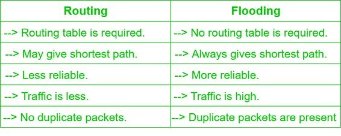

Prerequisite – Fixed and Flooding Routing algorithms
Routing is process of establishing the routes that data packets must follow to reach the destination. In this process, a routing table table is created which contains information regarding routes which data packets follow. Various routing algorithm are used for the purpose of deciding which route an incoming data packet needs to be transmitted on to reach destination efficiently.
Classification of Routing Algorithms: The routing algorithms can be classified as follows:
1. Adaptive Algorithms –
These are the algorithms which change their routing decisions whenever network topology or traffic load changes. The changes in routing decisions are reflected in the topology as well as traffic of the network. Also known as dynamic routing, these make use of dynamic information such as current topology, load, delay, etc. to select routes. Optimization parameters are distance, number of hops and estimated transit time.
Further these are classified as follows:
- (a) Isolated – In this method each, node makes its routing decisions using the the information it has without seeking information from other nodes. The sending nodes doesn’t have information about status of particular link. Disadvantage is that packet may be sent through a congested network which may result in delay. Examples: Hot potato routing, backward learning.
- (b) Centralized – In this method, a centralized node has entire information about the network and makes all the routing decisions. Advantage of this is only one node is required to keep the information of entire network and disadvantage is that if central node goes down the entire network is done.
- (c) Distributed – In this method, the node receives information fro its neighbors and then takes the decision about routing the packets. Disadvantage is that the packet may be delayed if there is change in between interval in which it receives information and sends packet.
2. Non-Adaptive Algorithms –
These are the algorithms which do not change their routing decisions once they have been selected. This is also known as static routing as route to be taken is computed in advance and downloaded to routers when router is booted.
Further these are classified as follows:
- (a) Flooding – This adapts the technique in which every incoming packet is sent on every outgoing line except from which it arrived. One problem with this is that packets may go in loop and as a result of which a node may receive duplicate packets. These problems can be overcome with the help of sequence numbers, hop count and spanning tree.
- (b) Random walk – In this method, packets are sent host by host or node by node to one of its neighbors randomly. This is highly robust method which is usually implemented by sending packets onto the link which is least queued.
Routing v/s Flooding:
